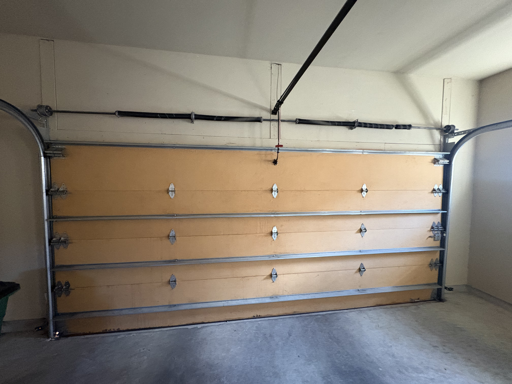
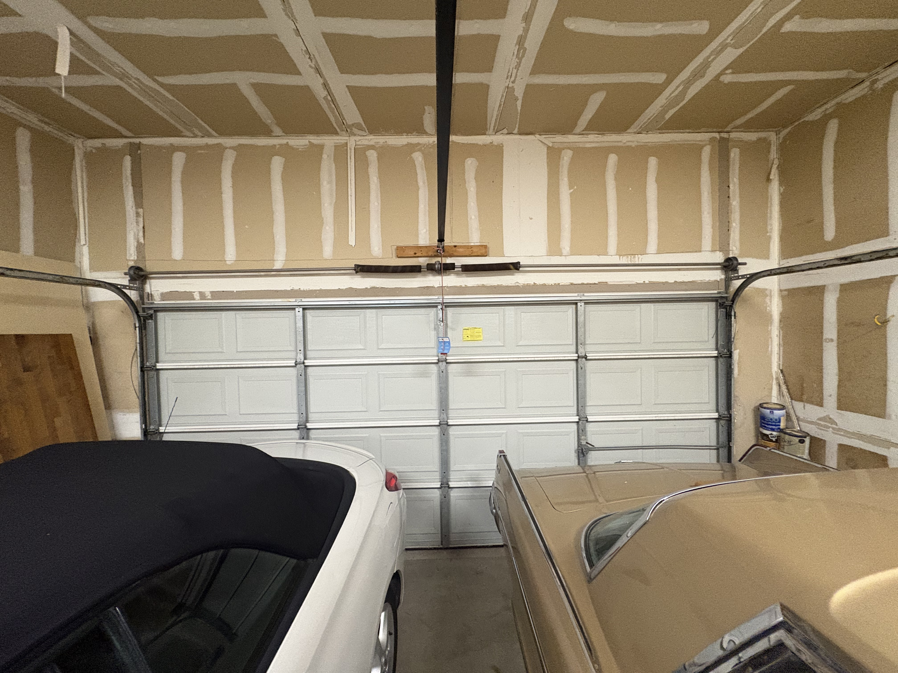
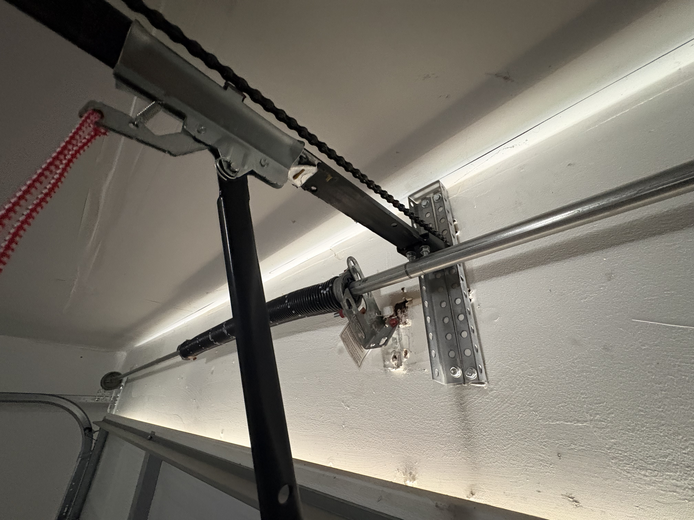
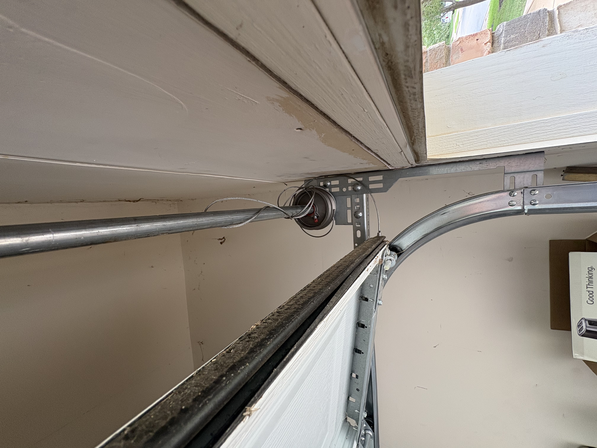
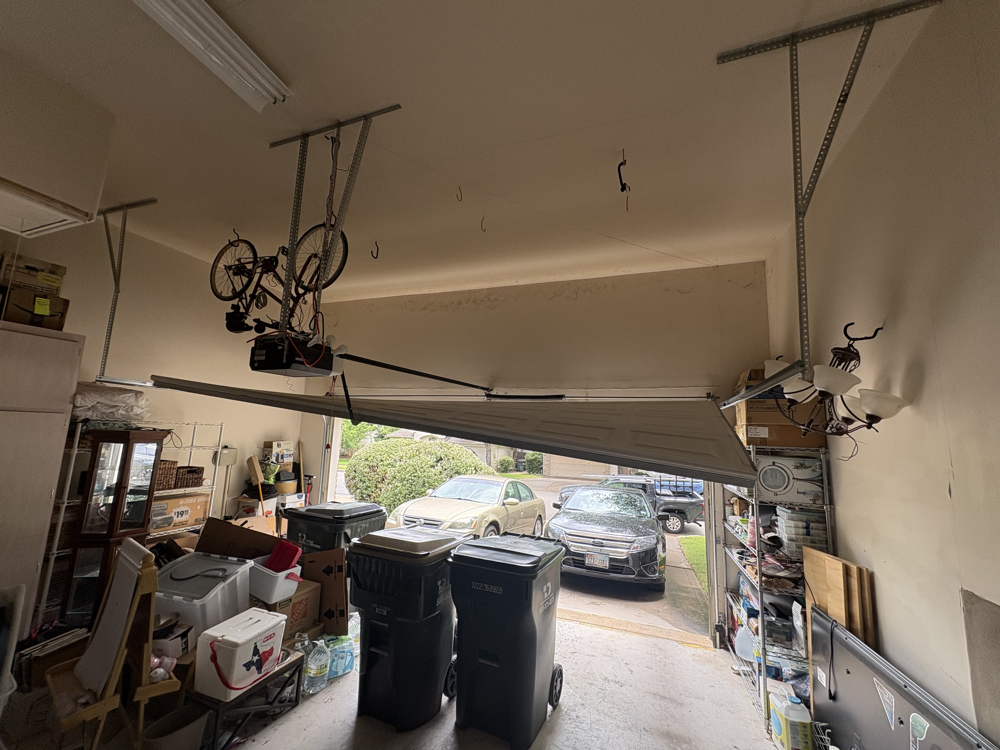
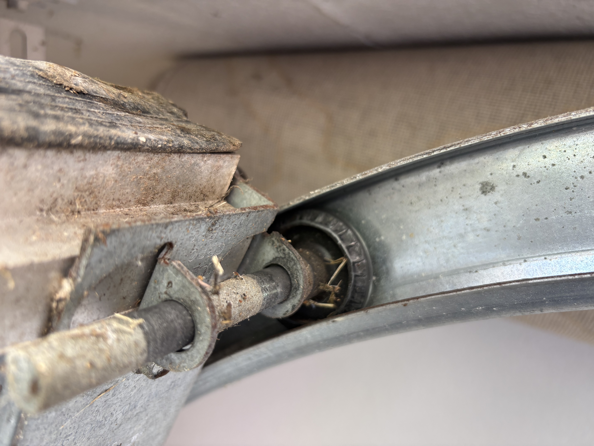
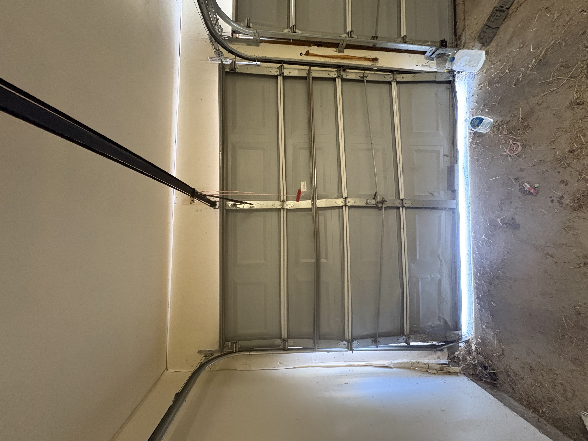

Start Here: What Is Your Door Actually Doing?
Find the description that matches your situation. The symptom narrows down the cause before you even look at the hardware.
Check whether the opener has power. Try the wall button instead of the remote. If the wall button works but the remote does not, the remote battery or programming is likely the issue. If neither works, the opener, its power source, or wiring may need attention.
This almost always means a mechanical problem rather than electrical. A broken spring is the most common cause. Look above the door at the torsion spring. If you see a gap, do not use the door.
The door may be binding against the tracks, the opener may be struggling with the door's weight, or the spring system is not properly counterbalancing the load. Do not keep cycling the opener.
Check the safety sensors first. They sit near the bottom of the tracks on each side. If anything is blocking them, or one has been bumped, the door will refuse to close. Clean the lenses and check both indicator lights are solid.
A cable has likely come off the drum or snapped. Do not continue operating the door. An uneven door puts enormous stress on the tracks, rollers, and opener.
Springs counterbalance the door's weight. When a spring fails, the door can feel like dead weight. If you also heard a loud bang, a broken spring is almost certainly the cause.
The Most Common Causes We See on Austin Service Calls
1. Broken Torsion Spring
A broken spring is the single most common reason a garage door stops working. Torsion springs sit on a metal bar directly above the door. Every open and close winds and unwinds the spring to counterbalance the door's weight. Standard springs are rated for around 10,000 cycles, roughly 7 years of average use. After that, they can fail without much warning.
When a spring snaps, it makes a loud bang, often described as a gunshot going off inside the garage. After that, the opener may run but be completely unable to lift the door.
What to look for
A visible gap in the spring coil, usually 2 inches or more. If the spring looks continuous and intact, something else is likely the problem.

On two-car garage doors with heavy panels, we sometimes see both springs fail at the same time, especially on older systems where both springs carry the same amount of wear.

We always recommend replacing both springs at the same time since they wear at the same rate. Two separate service calls always costs more than replacing both in one visit.
2. Center Bracket or Hardware Detached From the Wall
This one is less common but significantly more dangerous than a broken spring. The center bearing plate is the bracket that anchors the middle of the torsion bar to the wall above the door. It holds the entire spring assembly in place. When this bracket pulls loose from old anchors, water-damaged drywall, or years of vibration, the spring tension becomes uneven and unpredictable. The torsion bar can drop or whip without warning.

3. Loose or Off-Track Cable
Lift cables run from the bottom corners of the door up to drums at each end of the torsion bar. They work with the springs to raise and lower the door evenly. When a cable snaps or comes off the drum, one side of the door loses support and the door hangs at an angle.

4. Door Off Track
An off-track garage door is one of the more dramatic failures we get called for, and one of the more dangerous to ignore. The door comes off its tracks when a cable breaks suddenly, when a vehicle clips the door while it is moving, when a roller fails, or when a track bracket works itself loose over time.

5. Worn or Seized Rollers
Rollers are the small wheels that run inside the tracks and allow the door panels to travel smoothly. They are easy to overlook until they start causing problems. Most standard garage doors come with plastic rollers from the factory. Over time, plastic rollers wear down, crack, and eventually seize completely, especially in Austin's heat where UV exposure and temperature cycling accelerate the breakdown. When a roller seizes, it no longer rolls. It drags. That grinding puts extra strain on the tracks, hinges, and opener motor.

The Upgrade
Nylon rollers are the standard upgrade over plastic. They run quieter, last significantly longer, and hold up better in Texas heat. If your door still has the original plastic rollers, replacing them with nylon is one of the best low-cost upgrades you can do.
Full roller replacement: starting at $996. Damaged Door Panels
Not every garage door problem is mechanical. Sometimes the door itself is the issue. Panels can be damaged by vehicle impacts, hailstorms, falling objects, or years of exposure. A damaged panel can prevent the door from traveling correctly through the tracks, cause it to sit unevenly, or make the opener strain harder than it should.

A single damaged panel can sometimes be replaced if the same model is still available and the rest of the door is in good shape. When multiple panels are damaged or the door is older, full replacement often makes more financial sense. We will always give you an honest comparison before recommending one or the other.
7. Garage Door Opener Failure
Sometimes the door is perfectly fine and the opener is what has failed. Common issues include a burned-out circuit board, a stripped drive gear inside the motor housing, a failed capacitor, or motor burnout from operating the door with a broken spring for too long.
Before assuming the opener has failed, check the basics: Is the outlet working? Has the circuit breaker tripped? Is the red disconnect cord accidentally pulled? These take 30 seconds to check and occasionally save a service call.
Opener repair: $100 to $250 | New installation: starting at $459 installed8. Safety Sensor Problem
If the door opens normally but refuses to close, the safety sensors are usually the first thing to check. Each door has two photo-eye sensors mounted near the bottom of the tracks, one on each side. They send an invisible beam across the door opening. If anything interrupts that beam a leaf, a cobweb, a toy, or a sensor that has been bumped the door will not close and the opener lights will flash.
Clear any obstructions, wipe the sensor lenses, and check that both LED indicators are lit solid. If one is blinking, gently adjust it until both are solid. If that does not resolve it, the wiring or sensor itself may need replacement.
9. Door Out of Balance
An unbalanced door is one of the most overlooked causes of opener problems and premature wear. To test it yourself: pull the red disconnect cord to disengage the opener, then manually lift the door to about waist height and let go. A properly balanced door should stay in place. If it slowly falls or shoots upward, the spring tension needs professional adjustment.
An unbalanced door makes the opener work harder on every single cycle. Over time, that extra load shortens the life of the motor and puts stress on the cables, rollers, and tracks.
What Not to Do When Your Garage Door Stops Working
When to Call Immediately vs. When You Can Wait
| Situation | Priority |
|---|---|
| Broken spring visible gap in the coil | Call Now |
| Both springs broken | Call Now |
| Center bracket pulled away from wall | Call Now |
| Cable snapped or hanging loose | Call Now |
| Door is off track | Call Now |
| Door dropped suddenly | Call Now |
| Door noisy but functional | Address Soon |
| Door feels slightly heavier than usual | Address Soon |
| Opener straining but still working | Address Soon |
| Remote not working try a new battery first | Not Urgent |
| Door reverses when closing check sensors | Not Urgent |
| Opener running but disconnect cord may be pulled | Not Urgent |
Repair or Replace?
A garage door that stops working does not automatically need to be replaced.
Repair usually makes sense when the panels are structurally sound, the problem is a single failed component such as a spring, cable, roller, or opener, and the door is less than 15 years old.
Replacement may make more sense when multiple components are failing, the panels are severely damaged, the door is more than 15 to 20 years old, or repair costs are approaching the cost of a new door.
We will always give you an honest comparison before any work begins. Our estimates are free and our pricing is upfront with no surprises.